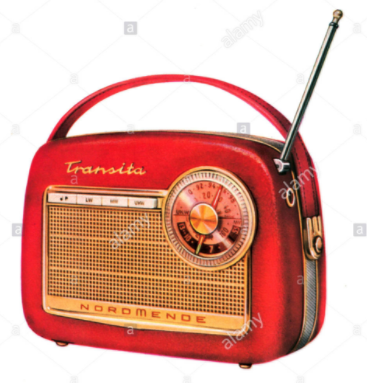

Friday, October the 6th, 2017
back to: title, date or indexes

Listen here to yesterday's edition of Hooting Yard On The Air which devotes much time to puppets, both shadow- and glove-, neither of which are usually found on the radio, for obvious reasons. The show includes rather ramshackle recitations of From The Mountains To The Sea, A Family Of Goatherds Unparalleled In Their Rapacity, Two Sparrows, A Person Of Unhinged Mien, Tuesday Weld Goes Berserk, and New Verse By Dennis Beerpint.